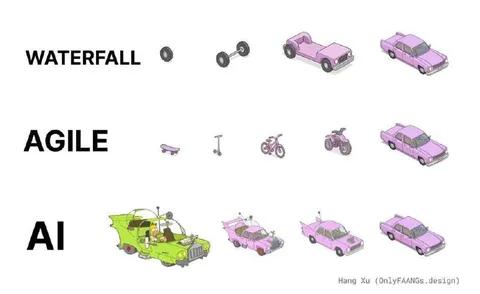

Наткнулся на прекрасный мем с глубоким смыслом, считаю долгом поделиться. Смысл его в том, что при AI-assisted разработке самое важное - сразу обладать в голове образом результата и уметь его объяснить глупой иишке.
В классической разработке вы делаете проект по частям, декомпозировав его на какие-то компоненты. В аджайл-разработке (да и тдд, кстати, тоже) вы последовательными приближениями наращиваете функциональность от MVP до финального сетапа. А с ИИ итерации последовательного приближения сводятся к тому, чтобы образ в вашей голове (или в описании проекта) сошелся с тем, что вам выдает ассистент.
Как любит приговаривать моя жена, "Без четкого ТЗ результат - ХЗ".
Как раз недавно с коллегами разгоняли методику подсчета эффектов на скорость разработки от применения ИИ. Ребята топили за то, что с ИИ снижается количество циклов код-ревью. А я парировал, что взамен растет количество итераций кодирования до получения желаемого результата. Что из этого перевесит - покажет время. А пока нужно учиться внятно излагать ТЗ, снабдив предварительно ИИшку нужным контекстом и гайдами.
